Complete end-to-end procedure for using the Zebra TC53 + RF40 sled to perform room inventory scans with AssetWorx.
| # | Step | Where |
|---|---|---|
| 1 | Take scanner + sled to Scanning PC | Scanning PC |
| 2 | Enter PIN on scanner | Scanner |
| 3 | Open AssetWorx & sync app | Scanning PC (must be on network) |
| 4 | Log in, wait for full sync | Scanner |
| 5 | Scan location barcode tag | Field — bottom trigger |
| 6 | Scan RFID assets in room | Field — top trigger |
| 7 | Review results and take action | Scanner screen |
| 8 | Tap Inventory Done, move to next room | Scanner screen |
| 9 | Return to Scanning PC — Sync App | Scanning PC (must be on network) |
| 10 | Log out | Scanner |
Scanner unlock PIN — enter this on the device keypad to unlock the screen.
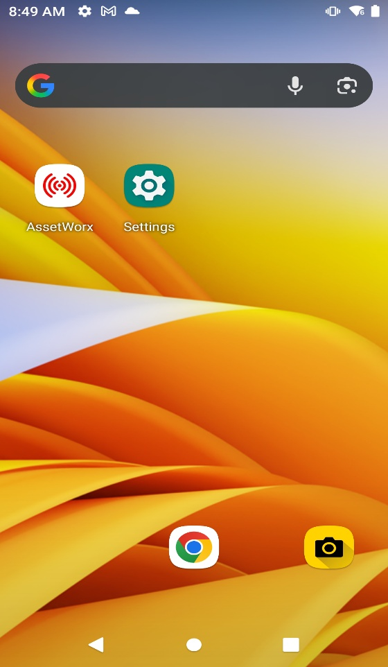
TC53 home screen — tap the AssetWorx icon to launch.
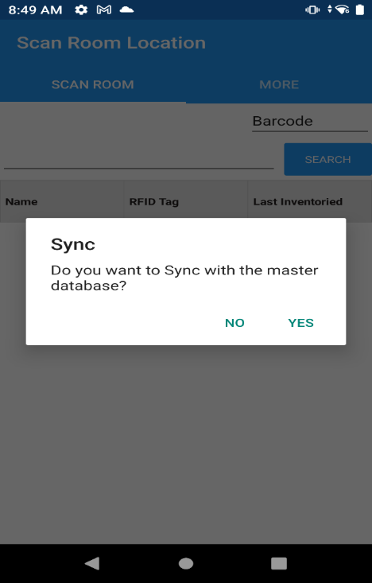
Sync prompt — always tap YES when at the Scanning PC to download the latest data.
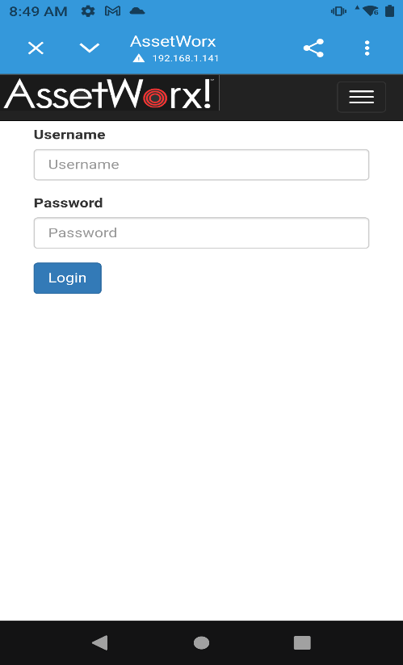
Login screen — enter your VA credentials and tap Login.
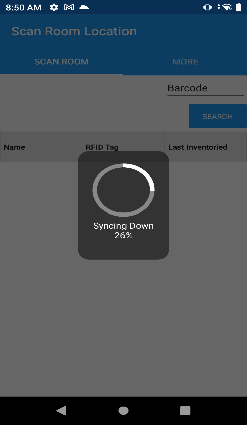
Sync in progress — wait for this spinner to fully complete before leaving the PC.
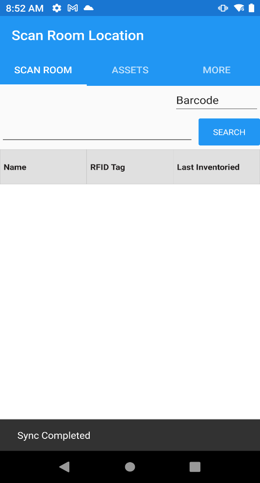
Sync Completed — only leave the PC once you see this confirmation at the bottom of the screen.
Scans 1D/2D barcodes. Point at the room location tag barcode and squeeze the bottom trigger to read it. The room name and number will appear in the app header.
Activates the RFID antenna. Hold the sled toward the room and squeeze the top trigger to detect RFID tags on equipment in the room.
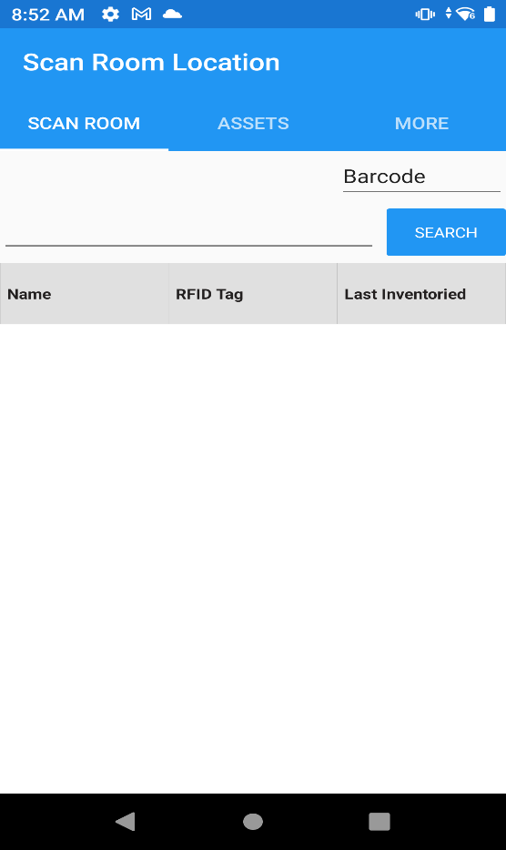
Scan Room Location — the room list is empty until you scan the location barcode tag. After scanning, the room will load and you can begin reading RFID tags.
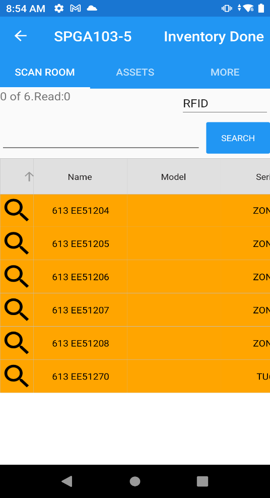
Orange items = assets expected in this room that have not yet been read by the RFID sled. Sweep around the room until all orange items turn another color.
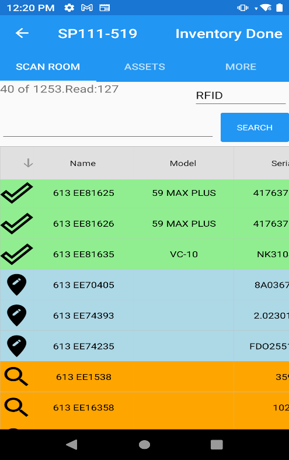
As you scan: ✓ Green = Inventoried 📍 Blue = Unexpected location ■ Orange = Not yet read
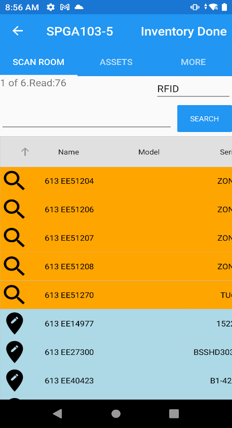
Mixed results: orange = still unread (keep scanning), blue = found here but assigned elsewhere.
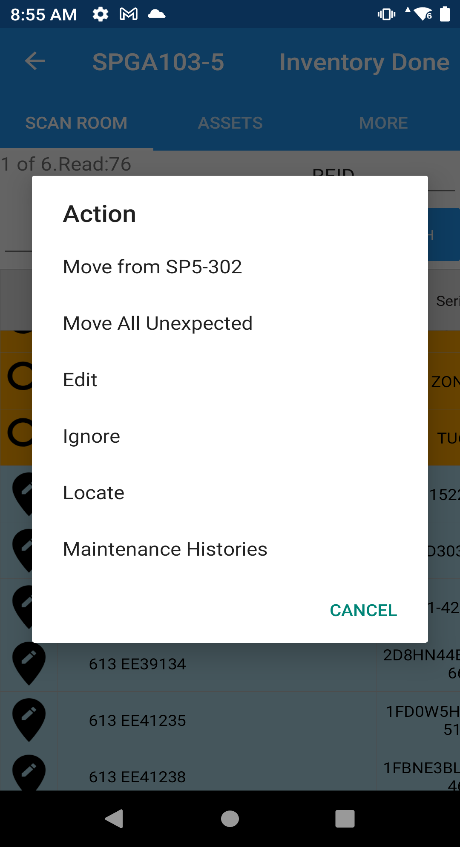
Action menu — tap any item to see available actions for that asset.
| Action | What it does | When to use |
|---|---|---|
| Move from [location] | Moves this asset to the current room | Asset is physically here and should stay |
| Move All Unexpected | Moves all blue items to the current room in one step | Multiple items all belong in this room now |
| Locate | Activates RFID Geiger-counter locate mode | Finding a specific asset by signal strength |
| Ignore | Skips this item for this scan session | Item is a known visitor / on loan |
| Edit | Edit asset details directly | Correcting asset record data |
Inventory Done button (top right) — tap when you have finished reviewing all assets in this room. This marks the room as inventoried and returns you to the location scanner screen.
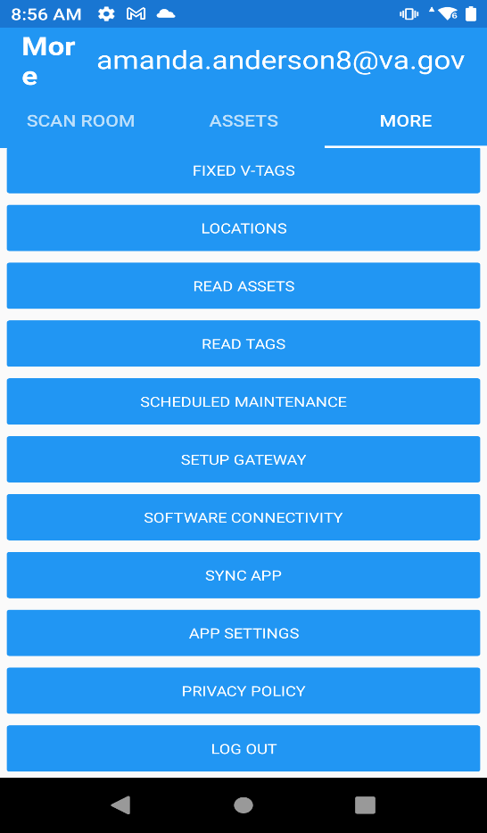
MORE tab — scroll down and tap SYNC APP to upload all scan data to the server. This must be done at the Scanning PC while on the VA network.
| # | Step | Key Detail |
|---|---|---|
| 1 | Bring scanner + sled to Scanning PC | Must be on VA network for sync |
| 2 | Enter PIN | 5613 |
| 3 | Open AssetWorx → tap YES to sync | Must be at Scanning PC |
| 4 | Log in → wait for “Sync Completed” | Do not leave PC until complete |
| 5 | Scan location barcode | Bottom trigger on sled |
| 6 | Scan RFID assets | Top trigger on sled, sweep entire room |
| 7 | Review color-coded results, take action | Orange = unread • Green = inventoried • Blue = unexpected |
| 8 | Tap Inventory Done → next room | Repeat Steps 5–8 for each room |
| 9 | Return to Scanning PC → MORE → Sync App | Must be at Scanning PC |
| 10 | Log out | MORE tab → Log Out |